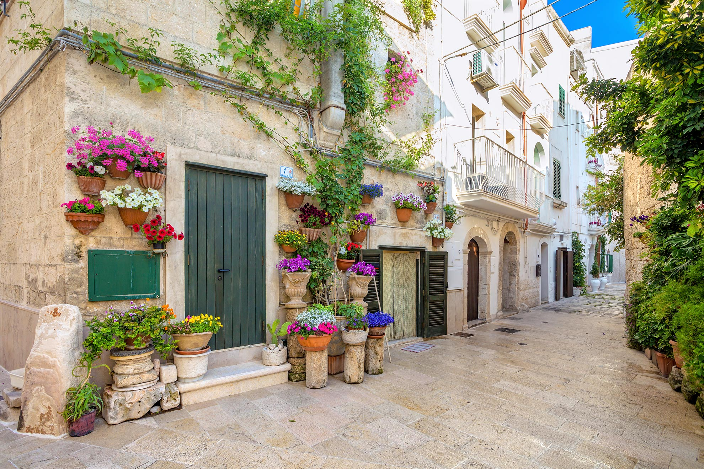

Il Centro Storico

Il centro storico di Monopoli è caratterizzato da un intricato intreccio di vicoli, piazze e antiche chiese affacciate sul mare. Le sue origini medievali sono evidenti nelle mura di cinta e nel Castello Carlo V, una fortezza pentagonale costruita nel 1525 durante la dominazione spagnola, situata su un promontorio a protezione dell'ingresso del porto antico.
Tra le attrazioni principali spicca la Cattedrale di Maria Santissima della Madia, eretta nel XVIII secolo sul sito di una precedente chiesa romanica. La cattedrale custodisce l'icona della Madonna della Madia, legata a una leggenda locale secondo cui l'immagine arrivò in città nel 1117 su una zattera, fornendo le travi necessarie per completare il tetto della chiesa incompiuta.
Il porto vecchio rappresenta il cuore pulsante della città, circondato da case bianche e balconi fioriti che creano un'atmosfera autentica. Le strade sono animate da locali tipici e botteghe artigiane, rendendo il centro storico un luogo unico e suggestivo da esplorare.
Castello di Santo Stefano
Situato su una penisoletta tra due insenature naturali, il Castello di Santo Stefano è una storica fortificazione costiera. Fondato nel 1086 da Goffredo, conte di Conversano, come monastero benedettino, divenne successivamente una roccaforte dei Cavalieri di Malta nel XV secolo. La struttura presenta un fossato ancora visibile e offre una panoramica sulla storia difensiva della regione.
Palazzo Palmieri
Eretto nel XVIII secolo, Palazzo Palmieri è un esempio di architettura barocca leccese. Situato nell'omonima piazza, il palazzo colpisce per la sua imponenza e le raffinate decorazioni in tufo dorato. Il grande portale è impreziosito da colonne che sostengono il balcone centrale e lo stemma della famiglia Palmieri.
Palazzo Martinelli
Affacciato sul Porto Antico, Palazzo Martinelli risale al XVIII secolo ed è caratterizzato da un elegante loggiato con otto arcate ogivali in stile neogotico. La facciata, ristrutturata dai Martinelli agli inizi dell'Ottocento, rappresenta un elemento distintivo dell'architettura locale.
Piazza Vittorio Emanuele
Tra le piazze più grandi d'Italia, Piazza Vittorio Emanuele fu realizzata nel 1796 su progetto dell'architetto De Simone. La piazza ha subito diverse trasformazioni nel corso dei secoli, diventando un punto di riferimento per la comunità locale e ospitando monumenti come quello ai caduti, opera dello scultore Edoardo Simone.
Piazza XX Settembre
Intitolata alla data della breccia di Porta Pia, Piazza XX Settembre fu realizzata nel XIX secolo come collegamento tra il borgo murattiano e il centro storico medievale. Durante i lavori di ristrutturazione del 2013-2014, sono stati riportati alla luce i resti del bastione di San Domenico e delle mura connesse, oggi visibili al pubblico.